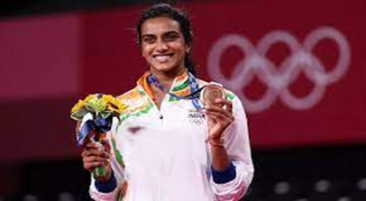
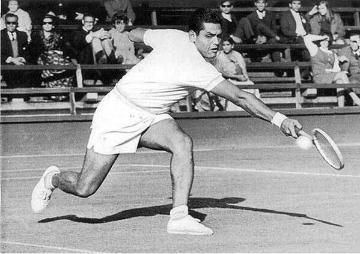
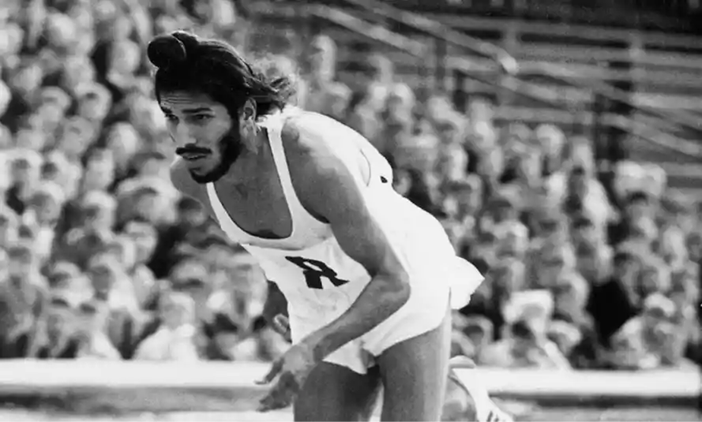

Physical Education
Holiday Homework
P V SINDHU ( Pusarla Venkata Sindhu)

She has won a total of five medals at the BWF World Championships and is just the second woman after China's Zhang Ning ever to win five or more singles medals in the competition. She represented India at the 2016 Summer Olympics (Rio), where she became the first Indian badminton player to reach the Olympic final.
In the under 14-years category, she won a gold medal at the 51st National State Games in India. At the age of 14, PV Sindhu entered the international circuit. She won a bronze medal at the 2009 Sub-Junior Asian Badminton.
Ramanathan Krishnan

Achievements of India in sports: Another sport in which we have no representation in singles competitions is lawn tennis. Ramanathan Krishnan, on the other hand, made it to the Wimbledon semi-finals in 1960 and 1961
Pullela Gopichand

Pullela Gopichand became the first Indian to win the Yonex All-England Open Championships in more than 20 years, causing one of the biggest upsets in the world’s oldest event. The 10th seed was a small favorite to beat Chen Hong, but Gopichand’s performance, which included victories against Olympic champion Ji Xinpeng and world No. 1 Peter Gade, will be remembered for a long time.
Milkha Singh

Milkha Singh, the Flying Sikh, was our first true athletics sensation. He was the first Indian to win a Commonwealth Games gold medal. He won several gold medals in the Asian Games and was persuaded by Prime Minister Jawaharlal Nehru to compete in one final race in 1960 against Pakistani Abdul Khaliq.